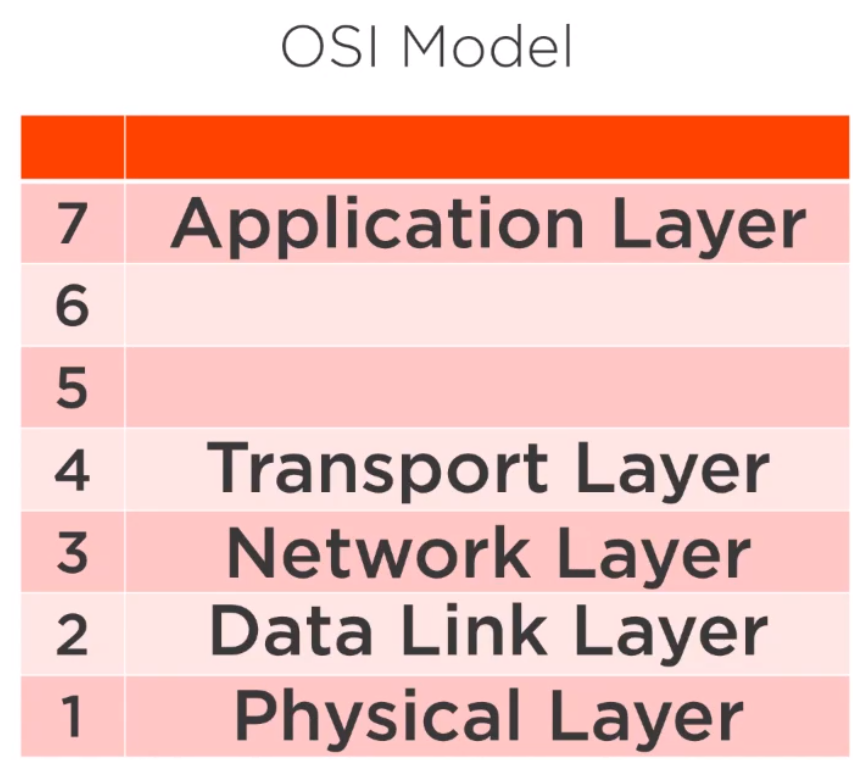
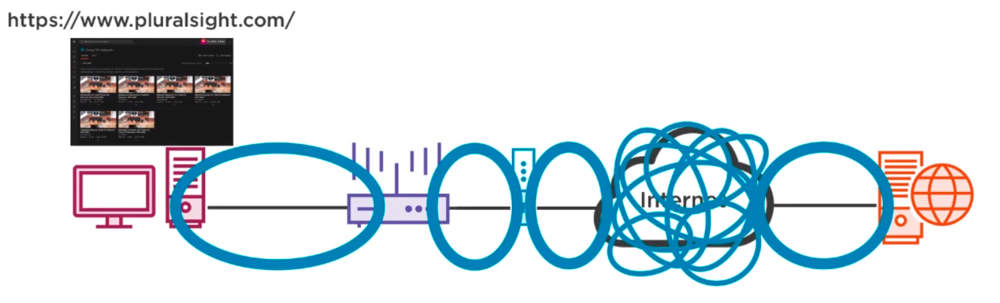
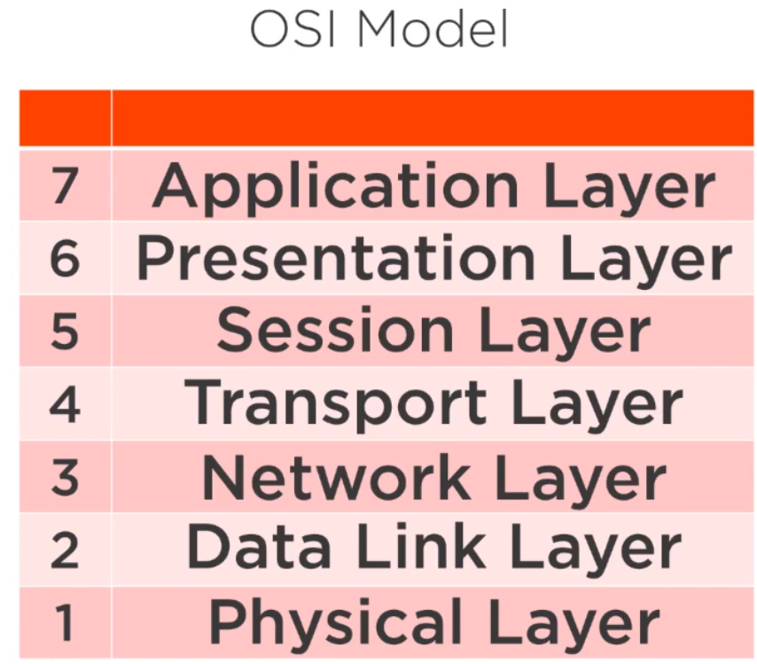

Table of Contents
1 OSI Model
- Open Systems Interconnect
- Watching youtube video
- My system : wireless router through WiFi / LAN : ISP(Modem) : Internet : Youtube Server
- Type in https://www.youtube.com
- Goes to Youtube server –> pulls up the video
- Transfers it to my system

1.1 Physical Layer
- wireless/wired cables (twister pair cables: non-identical)
- modem - internet : CoAx cable
- internet : fiber optics / wireless / copper
- All of these cables and the protocols that define how those cables are constructed are physical layer protocols. Example : twister pair cabling require a very precise protocol to understand how to construct it, same thing with other types of cables. Even the wireless connections use electronmagnetic spectrum to transfer information.
1.2 Data Link Layer
- Protocols required to move information from one end of the cable to another end of the cable. So we end up having mini-network segments (marked as blue in the following picture)
- A network segment is a collection of network devices that operate in the same space in the same protocol.
In each of the network segments in the picture, a specific protocol is used to manage and transfer the data.

- Most of the segments in the picture use wired/wireless ethernet. For example : computer-router, router-modem, internet-server.
- cable modem - isp uses DOCSIS-3 (data over cable service interface specification)
- internet is mainly ethernet –> extremely high speed communication (100Gb/s)
- These protocols are part of data link layer : place where we move data from one device to another device in very small short little hops.
1.3 Network Layer
- The data link layer is responsible for moving traffic between the components of a network segment. For example ethernet within the first segment moves information only between the computer and router i.e the communication is done only between short hops.
- But we also need communication between different network segments. For example computer - cable modem.
- IP Addressing to allow us to send messages along longer distances.
- IP Address is just like a home address. It is a unique address of all the devices on the internet.
- IP Routing allows us to send messages from one unique address to another.
- Ethernet, IP addressing and IP routing work closely together to communicate.
1.4 Transport Layer
- Before we can ask the server to send us the website information, we have to setup some kind of session in between the client and server. (similar to telephone call)
- TCP Transmission control protocol allows us to build the session.
1.5 Application Layer
- Need a protocol that allows to transfer the website located on the server to the web browser located on the client. –> HTTP (hyper text transfer protocol)
- Web pages are written in format : hyper text (basic formatting of a text document to indicate instructions on how to present info in a web browser)
- transfer to hyper text file using HTTP protocol
- HTTP is an application layer protocol
1.6 Presentation Layer

- ASCII for encoding text
- EBCDIC used by IBM for encoding text
- some protocol needed to convert both data format
- Antiquated Layer
1.7 Session Layer
- also antiquated layer